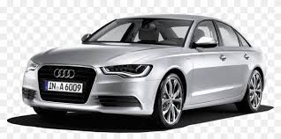

| Chitkara university |
| Image |
Discription |
 |
The Toyota Fortuner is a robust, mid-size SUV known for its off-road capabilities and stylish, rugged design. It offers a spacious interior with advanced features, making it suitable for both city driving and tough terrains. Powered by reliable engines, the Fortuner is popular for its durability, performance, and comfort. |
.jpeg) |
A black car exudes elegance and sophistication, often giving off a sleek and polished appearance. Its deep, glossy finish enhances the vehicle's lines and contours, making it stand out in any setting. Though it requires regular maintenance to stay clean, a black car delivers a timeless, classy look. |
 |
An Audi in black elevates its modern, luxurious design with a refined, bold presence. The dark color accentuates the sharp lines and iconic styling, giving the car an air of sophistication and power. Known for its advanced technology and smooth performance, a black Audi is a statement of both elegance and innovation. |
|
An elephant riding a bicycle is an amusing and whimsical sight, showcasing a playful blend of strength and agility. The contrast between the massive, gentle giant and the delicate, balanced bicycle creates a humorous and imaginative visual. This unlikely scenario sparks curiosity, highlighting both the elephant's intelligence and the sheer novelty of the act. |